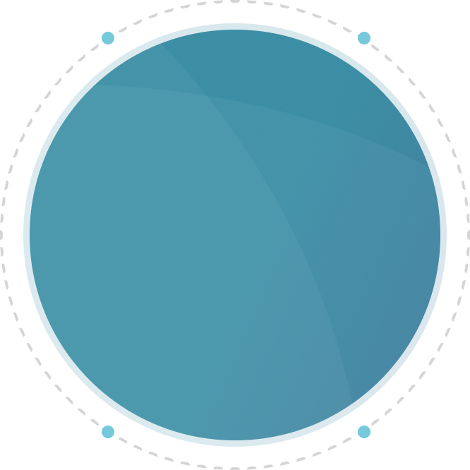
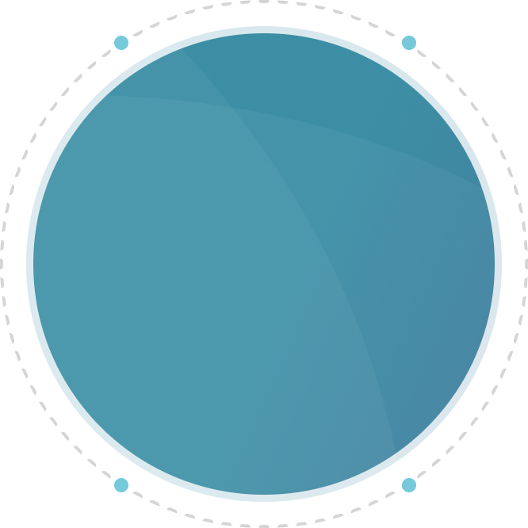

특수건강진단
특수건강진단은 해당 유해인자에 노출되는 근로자에 대하여 실시하는 주기적 건강진단입니다.
유해인자 노출에 의한 근로자의 직업성 질환을 조기에 찾아내어 적절한 사후관리 또는 치료를 신속히 받도록 함으로써 직업성 질환으로부터
근로자의 건강을 유지,
보호하기 위한 목적으로 실시하고 있습니다.
특수건강진단
실시 대상
직업성 질환의 발생 원인이 되는
유해인자에 노출되는
업무에 종사하는 근로자
특수건강진단 대상 업무에 종사할 근로자에 대하여 배치 예정업무에 대한 적합성 평가를 위하여 사업주가 실시하는 건강진단
특수건강진단 대상 유해인자 기타 유해인자에 의한 중독의 여부, 질병의 이환 여부 또는 질병의 발생 원인 등을 확인하기 위하여 법 제131조 제1항의 규정에 의한 지방노동관서의 장의 명령에 따라 사업주가 실시하는 건강진단
특수건강진단 대상 유해인자에 노출되는 업무에 종사하는 근로자의 건강관리를 위하여 사업주가 실시하는 건강진단
특수건강진단 대상 업무로 인하여 해당 유해인자에 의한 직업성 천식, 직업성 피부염, 기타 건강장해를 의심하게 하는 증상을 보이거나 의학적 소견이 있는 근로자에 대하여 사업주가 실시하는 건강진단
특수건강진단 시기 및 주기
특수건강진단 관련 안내사항
- 특수건강진단(또는 배치 전 건강진단)을 원하시는 사업장은 사업장의 건강진단 담당자를 통해 예약 및 상담 후 진행 가능합니다.
- 특수건강진단의 경우 개인별 검진 예약은 어려우니 참고하시기 바랍니다.
(예약 문의 : 02-3497-5732/
예약 메일 : health@smlab.co.kr)
특수건강진단 안내사항
- 검진 시간 : 09:00 ~ 15:30 (주말 및 공휴일 제외 / 사업장에 사전 안내된 시간)
- 검진 장소 : 서울특별시 서초구 논현로 145, 수냐빌딩 1층 삼광의료재단 건강검진센터
- 검진 전 8시간 이상 금식이 필요합니다.
(해당자에 한함) - 본인 확인을 위한 신분증을 지참해 주시기 바랍니다.
- 삼광의료재단 특수건강진단은 산업안전보건법에서 명시한 절차에 따르고 있으며, 반드시 사전 예약이 필요합니다.
특수 항목 대상자 주의사항
- 폐기능 검사 대상자 : 폐기능 검사 예정 검진자는 검사 당일 금연은 필수입니다. (검사 소요시간 최대 30분)
- 청력 검사 대상자 : 검사 전 14시간 동안 소음에 노출되지 않은 상태에서 검사받으셔야 합니다. 청력 정밀검사(2차검진)에 해당 될 경우 검사 시간은 최대 한 시간 정도 소요될 수 있습니다.
- 생물학적 노출 지표 채취 대상자 : 추가 배포한 안내사항을 숙지하시어 소변을 채취하시고, 확인서를 반드시 작성해 당일에 지참해 주시기 바랍니다.
등록 신청 서류
- 사업자등록증
- 작업환경측정결과표(최근 2회분)
- 물질안전보건자료(MSDS)
- 전년도 특수건강검진 사후관리 소견서 및 결과표
- 검진 대상자 명단
- 신청 서류 접수 후 특수건강진단 담당자와 상담 후 추가 안내
결과 안내
- 근로자 건강진단 결과는 4주 이내 개인 이메일 또는 개별 우편(사업장 주소지)으로 발송됩니다.
- 문의 : 02-3497-5732 / 09:00 ~ 17:00
(주말 및 공휴일 제외)
조직도 · 업무분장
손유일
- 총괄책임자
- 직업환경의학전문의
업무
특수건강진단 업무 총괄(관리)
특수건강진단 문진 및 판정의
연락처
02-3497-5709
-
-
구나현
- 분석책임자
- 임상병리사
업무
특수건강진단 분석
연락처
02-3497-5124
-
양희정
- 분석담당자
- 산업위생관리기사
업무
특수건강진단 분석
연락처
02-3497-5124
-
박혜지
- 분석담당자
- 산업위생관리기사
업무
특수건강진단 분석
연락처
02-3497-5125
-
-
-
김소형
- 행정/검사담당자
- 간호사
업무
특수건강진단 사전조사 업무
행정업무 및 기초검사
연락처
02-3497-5732
-
이지현
- 행정/검사담당자
- 간호사
업무
특수건강진단 사전조사 업무
행정업무 및 기초검사
연락처
02-3497-5733
-
정우용
- 행정/검사담당자
- 임상병리사
업무
폐활량검사 및 청력검사
채혈 및 채뇨검사
연락처
02-3497-5735
-
-
-
천다정
- 행정/검사담당자
- 방사선사
업무
방사선 촬영
행정업무
연락처
02-3497-5736
-
특수건강진단 예약 안내
특수건강진단을 희망하시는 사업장은 전화 혹은
메일을 통해 예약상담을 진행해 주세요.
친절하게 응대해 드리겠습니다.
국가건강검진 (일반건강검진)
국가건강검진은 우리나라 국민건강보험법에 따라 고혈압, 당뇨병 등 생활습관과 관련된 질환을 조기 발견하기 위한 목적으로 혈액검사, 생활습관평가 등의 검사를 시행합니다.
국가건강검진을 이용하여 근로자 건강진단 중 일반건강진단의 실시를 인정받을 수 있습니다.
실시근거 : 국민건강보험법 제52조 및 동법 시행령 제25조 

일반건강검진
실시 대상
짝수 해 출생자는 짝수연도,
홀수 해 출생자는 홀수연도
피부양자
지역가입자
지역가입자
검진대상자 연령 및 주기
일반건강검진은 기초검사(신체 계측, 혈압), 청력, 시력, x-ray 검사, 혈액, 소변 검사(당, 신장 기능 등) 항목으로 구성되며, 검진대상자 연령 및 주기에 따라 검사항목 추가
※ 암 검진(내시경, 자궁경부암)과 구강검진을 제외한 일반 검진만 가능합니다.
국가건강진단 관련 안내사항
- 삼광의료재단 건강검진센터는 사전 예약제로 운영되고 있습니다.
- 국가건강진단을 희망하시는 고객분들께서는 반드시 사전 예약 후 내원하시기 바랍니다.
(예약 문의 : 02-3497-5731)
검진 전 유의사항
- 검진 전 8시간 이상 금식이 필요합니다. (커피, 우유, 담배, 주스, 껌 포함)
- 혈압약을 복용하시는 분은 검진 당일 아침 일찍 물 소량과 복용하시고 내원 바랍니다.
- 당뇨약을 복용하시는 분은 복용하지 마시고 내원 바랍니다.
- 생리 기간인 경우 소변검사 결과가 부정확할 수 있으므로 생리 중에는 검진을 피해 예약해 주시기 바랍니다.
건강검진센터 운영시간 안내
- 검진 시간 : 09:00 ~ 15:30 (주말 및 공휴일 제외)
예약 안내
- 예약 문의 : 02-3497-5731 (검사 전 반드시 사전 예약 후 내원하시기 바랍니다.)
건강검진센터 위치 및 내원 안내
- 검진 장소 : 서울특별시 서초구 논현로 145, 수냐빌딩 1층 삼광의료재단 건강검진센터
- 지하철 이용 시 :
양재역 3호선 (5번 출구) - 도보 약 15분 소요 / 양재역 신분당선 (8번 출구) - 도보 약 10분 소요 - 버스 이용 시 :
양재노인종합복지관 (463, 641, 4211, 4312) / 원불교 (강남10, 서초18, 서초21) 하차 후 양재천 방향으로 직진 - 도보 약 1분 소요
결과 안내
- 국가건강진단 검사 결과는 건강진단 실시일로부터 15일 이내 송부드리고 있습니다.
(직접 방문 또는 우편/이메일 발송) - 문의 : 02-3497-5731 / 09:00 ~ 17:00
(주말 및 공휴일 제외)
국가건강검진 예약 안내
국가건강검진을 위해 내원을 희망하시는
고객께서는 전화 혹은 메일을 통해 예약상담을
진행해 주세요.
친절하게 응대해 드리겠습니다.